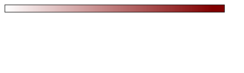

{% extends "base.html" %}{% block title %}Safe Travels{% endblock %}
{% block content %}

<script src="jquery-1.10.2.min.js"></script>
<script src="raphael-min.js"></script>
<script src="kartograph.js"></script>

<script type="text/javascript">
	$(function() {
		var map = kartograph.map('#map');
		
		var cases = {
			"AK": 71291,
			"AL": 552650,
			"AR": 357473,
			"AZ": 900220,
			"CA": 3839640,
			"CO": 566144,
			"CT": 349215,
			"DE": 110093,
			"FL": 2357490,
			"GA": 1116470,
			"HI": 37025,
			"IA": 374358,
			"ID": 196207,
			"IL": 1400975,
			"IN": 760867,
			"KS": 322458,
			"KY": 467233,
			"LA": 489951,
			"MA": 711162,
			"MD": 463482,
			"ME": 69219,
			"MI": 1000363,
			"MN": 606577,
			"MO": 648934,
			"MS": 324853,
			"MT": 114433,
			"NC": 1015739,
			"ND": 110889,
			"NE": 225354,
			"NH": 99770,
			"NJ": 1026286,
			"NM": 206551,
			"NV": 339745,
			"NY": 2119207,
			"OH": 1114491,
			"OK": 461893,
			"OR": 210794,
			"PA": 1218886,
			"RI": 152819,
			"SC": 124641,
			"SD": 124641,
			"TN": 857933,
			"TX": 2973683,
			"UT": 420281,
			"VA": 682856,
			"VT": 24489,
			"WA": 458634,
			"WI": 678556,
			"WV": 164652,
			"WY": 63138
		};
			
		
		var case_density = {
				"AK": 6.9,
				"AL": 7.8,
				"AR": 26.7,
				"AZ": 8.9,
				"CA": 6.4,
				"CO": 8.3,
				"CT": 2.3,
				"DE": 3,
				"FL": 15.8,
				"GA": 7.3,
				"HI": 3.8,
				"IA": 2.3,
				"ID": 6.5,
				"IL": 4.9,
				"IN": 6.8,
				"KS": 12.1,
				"KY": 4.7,
				"LA": 22.7,
				"MA": 1.8,
				"MD": 1.5,
				"ME": 1.1,
				"MI": 2,
				"MN": 2.1,
				"MO": 22.3,
				"MS": 12.8,
				"MT": 6,
				"NC": 6.6,
				"ND": 2.1,
				"NE": 3.8,
				"NH": 2.3,
				"NJ": 3.2,
				"NM": 5.7,
				"NV": 23.1,
				"NY": 3.1,
				"OH": 2.4,
				"OK": 12.3,
				"OR": 4.9,
				"PA": 1.6,
				"RI": 3.1,
				"SC": 5.7,
				"SD": 1,
				"TN": 6.8,
				"TX": 6.8,
				"UT": 18.3,
				"VA": 2.8,
				"VT": 1.6,
				"WA": 7.8,
				"WI": 2.3,
				"WV": 3.8,
				"WY": 17.1				
				
		}
			
		map.loadMap('usa.svg', function() {
			map.addLayer('layer0', { key: 'data-key'}, {
				styles: {
					stroke: '#000000',
					fill: '#d03b1b'
				}
			});	
		
			var ratio = 0;
			

			map.getLayer('layer0').style('fill', '#800000');
			map.getLayer('layer0').style('opacity', function(d) {
				ratio = Math.log(cases[d.key])/Math.log(3839640);
				
				ratio = (ratio).toFixed(2);
				return ratio;
			});
		});
		

	});

</script>
	<div id="map"></div>
	Legend<br>
	No risk Highest Risk<br>
	


{% endblock %}